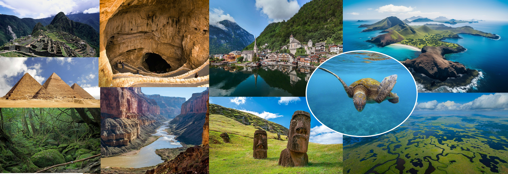

A JOURNEY THROUGH TIME
時を越える。
世界に、出会う。
自然が描き、人が刻んだ、かけがえのない風景。
6つの世界遺産から、その物語をひもとく。

ONE PLANET. COUNTLESS STORIES.THE WORLD HERITAGE LIST
ユネスコの世界遺産一覧を見る ↗ABOUT WORLD HERITAGE
この星の記憶を、
未来へ。
世界遺産とは、国や地域の枠を越え、人類全体で守り、未来へ受け継ぐべき「顕著な普遍的価値」をもつ文化財や自然です。1972年にユネスコ総会で採択された世界遺産条約に基づき、世界遺産委員会が登録を決定します。歴史的な建築や遺跡、文化的景観などの「文化遺産」、地形や生態系、生物多様性などが評価される「自然遺産」、両方の価値を備える「複合遺産」の三つに分けられます。登録には価値を示す基準に加え、完全性や保護・管理の体制などが求められ、文化遺産では真正性も重要です。登録はゴールではなく、長期的な保全の出発点です。災害、紛争、開発、気候変動、過度な観光などの脅威に対して、各国や地域社会が協力して対策を進めます。私たちも、その背景にある歴史や自然を学び、訪問時のルールを守ることで保全に参加できます。世界遺産を知ることは、世界の多様性を理解し、かけがえのない場所を次の世代につなぐ一歩になります。
参考：UNESCO「World Heritage」↗THE COLLECTION
6つの風景、6つの物語。
PRESERVE THE EXTRAORDINARY
知ることから、
守ることへ。
美しい風景の向こうにある文化と自然。
その価値を理解する旅を、ここから。